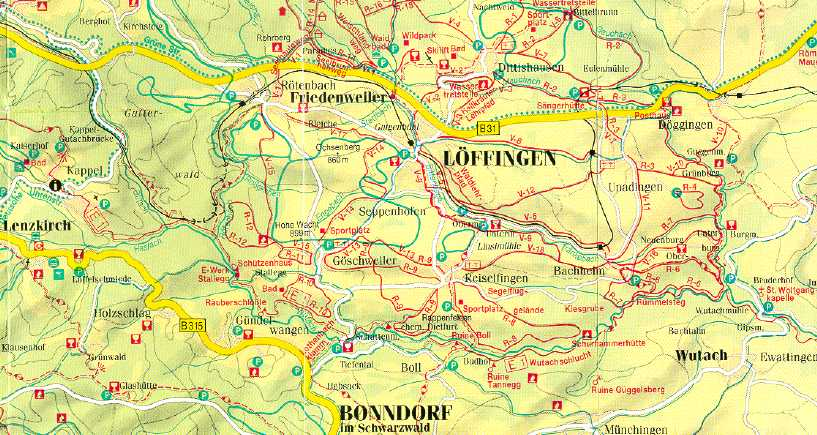

Tourenbeschreibung Wutachschlucht
Anreise
Die Anreise kann per Auto oder mit dem Zug erfolgen.
Bahn: Freiburg kann mit der Bahn im Stundentakt erreicht werden.
Dort wechselt man in die Höllentalbahn von Freiburg nach Donaueschingen.
In Löffingen die Bahn verlassen und mit dem Taxi oder zu Fuss
Schattenmühle bringen lassen.
Auto: A5 Frankfurt/Basel an Anschlussstelle Freiburg verlassen
und über die B31 bis nach Löffingen fahren. Durch Löffingen
nach Göschweiler. Auf der Strasse von Göschweiler nach Bonndorf
liegt im Tal gegenüber vom Parkplatz die Pension Schattenmühle.
Voraussetzungen für die Tour
Mittelschweres, aber technisch leichtes Trekking für geübte Wanderer
mit guter Kondition.
Gehzeiten von 6 bis 8 Stunden in Höhen um 600 bis 1500m (Feldberg).
Trittsicherheit, Schwindelfreiheit, Kondition, Improvisationstalent, Gute Laune.
Übernachtungsmöglichkeiten
Preiswerte Übernachtungsmöglichkeiten gibt es einerseits direkt an
der Wutach in der Schattenmühle
oder falls dort nichts mehr frei sein sollte in
Friedenweiler

Die Tour
Die Tour besteht aus zwei ca. 25km langen Tagesetappen. Der Startpunkt
des ersten Tages ist Rötenbach. Vom Ort geht es am Rötenbach entlang
bis zum Zusammentreffen von Rötenbach, Haslach und Wutach. Dort geht es
rechts herum an der Haslach entlang. An der nächsten Weggabelung links
halten. Nach kurzer Zeit kommt eine Br¨cke. An dieser Stelle fliessen die
Haslach und die Gutach zusammen. Es geht weiter an der Haslach entlang Richtung
Kappel. Dort trifft man auf eine Teerstrasse, die man nach rechts geht.
Man kommt nach einiger Zeit an einem Steinbruch vorbei. Rechts liegt die
Gutach. Bei der ersten Gelegenheit überquert man die Gutach und geht an
ihr flußabwärts. Es geht eine ganze Weile lang an der Trasse der
Höllentalbahn entlang. Nach einiger Zeit trifft man wieder auf die
Weggabelung und gelangt dann kurze Zeit später wieder zur
Rötenbachmündung. Nun geht es aber geradeaus an der Wutach weiter.
Am Räuberschlößle vorbei bis zur Schattenmühle. Am
dortigen Wanderparkplatz ist der Endpunkt der ersten Tagesetappe.
Übernachtet man in der Schattenmühle so kann man abends
bei Dunkelheit noch ein Stück die Rötenbachklamm hinaufgehen.
Die zweite Tagesetappe beginnt an der Schattenmühle. Es geht den ganzen
Tag an Ruine Bad Boll, Schurhammerhütte, Rümmelesteg bis zur
Gauchachmündung an der Wutach entlang. Dann geht es über die
überdachte Brücke die Gauchach hoch zur Burgmühle. In den
Sommermonaten besteht die Möglichkeit dort etwas zu essen und zu trinken.
Von dort geht es weiter die Gauchach entlang bis nach Döggingen, dem
Endpunkt des zweiten Tages.
Danach kann man mit der Bahn zurück nach Löffingen fahren und zur
Schattenmühle gehen.
Da die einzelnen Wanderungen immer an der Schattenmühle enden wird
nur ein Tagesrucksack benötigt. Alle übrigen Dinge können in der
Schattenmühle bleiben.
Je nach Witterungsbedingungen lohnt sich bei der An- oder Abreise noch
ein kleiner Abstecher zum Feldberg.
|